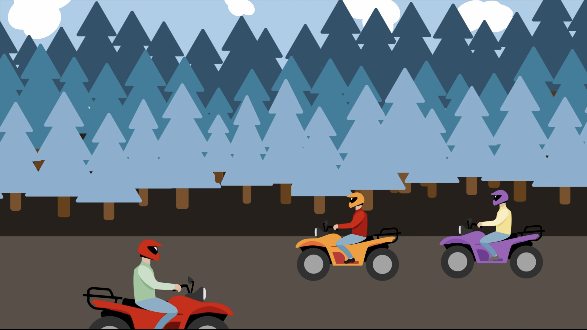
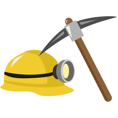

Welch Tourism Motion Graphic Animation
- Medium: Motion Graphic Video
- Date: Fall 2023
- Programs Used: Adobe Illustrator, After Effects
As a lifelong native to a community near the small city of Welch, West Virginia I am no stranger to the issues present and the lack of tourism in the area. Once a booming city during the peak of coal production during the 1950s, Welch is a historical city located in McDowell County, WV. Known for coal production, hospitality, and humbleness, this city has a special place in the hearts of locals that this project aimed to express through graphic design conventions!
Through research on the history of Welch, its most popular attractions, and best potential qualities, a welcoming video that introduces the viewer to the town and all it has to offer was conceptualized. This project served as a means to greatly hone in on skills of creating original assests for projects, as well as storyboarding and video editing.
A few examples of the various assets created during the process.
Watch the video below!